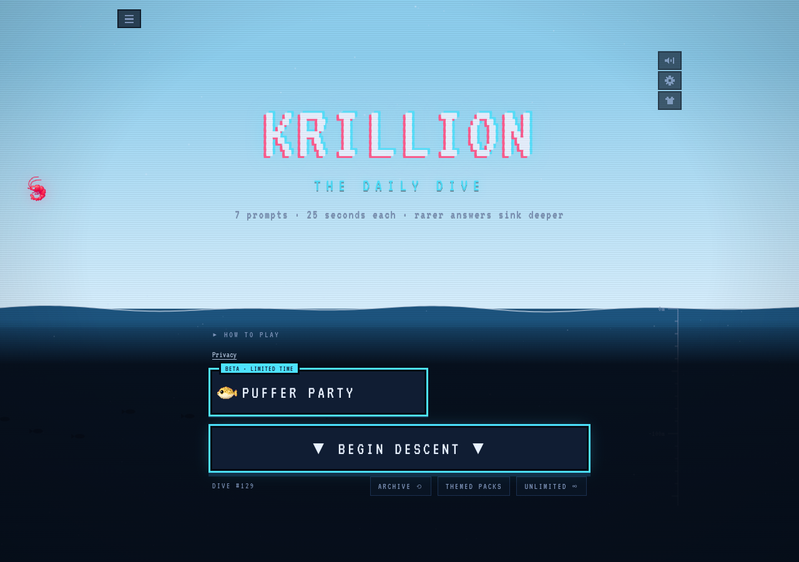
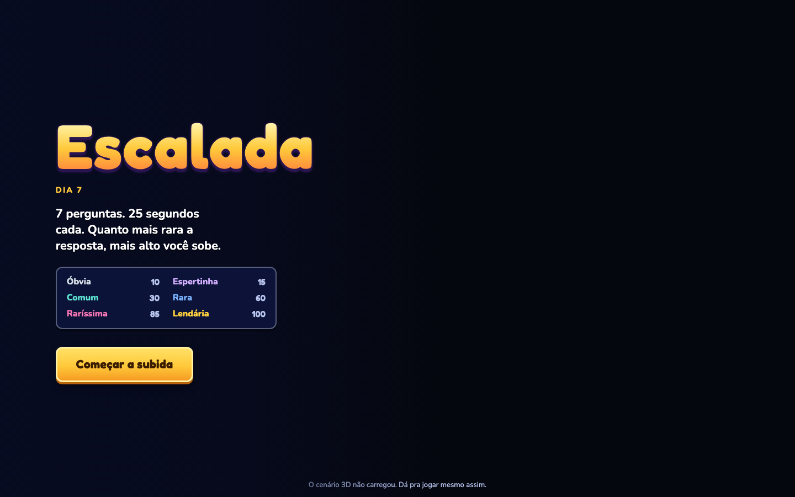

Digital Business Modeling · Pitch final
DOBRA
Formatos globais. Jogos locais.
O padrão já existe
O Brasil não precisa inventar a categoria para construir a versão local.
A cronologia não prova cópia. Prova que uma categoria validada pode ganhar produto, marca e operação próprios no Brasil.
Nos jogos, a lógica fica mais leve
Validar um formato pode custar muito menos.
O produto é digital, o MVP pode ser pequeno e o próprio resultado da partida pode carregar a distribuição.
Antes dos números
O que é o Wordle?
Um jogo diário em que cada pessoa tem seis tentativas para descobrir uma palavra de cinco letras.
letra certaamarelo
lugar erradocinza
não aparece
 CAPTURA ILUSTRATIVA · WIKIMEDIA COMMONS
CAPTURA ILUSTRATIVA · WIKIMEDIA COMMONSPrimeiro, a validação
O Wordle levou cerca de três meses para provar grande tração.
3 meses
O risco inicial era descobrir se as pessoas realmente queriam jogar.
Depois, a localização
O Termo entrou depois da prova. E cresceu mais rápido.
O caso comprova velocidade e distribuição. Não há receita pública do Termo comprovada.
A oportunidade
O mundo valida formatos todos os dias. Poucos chegam bem localizados ao Brasil.
Não basta traduzir a tela.
É preciso localizar a experiência.
conteúdo
identidade
A solução
Uma desenvolvedora brasileira de localização e lançamento rápido.
Identificamos mecânicas já validadas, adaptamos conceito, conteúdo, identidade e experiência, e lançamos versões próprias para testar no mercado.
Não dependemos de um único jogo.
Construímos um processo recorrente.
A máquina
Cinco etapas. Uma decisão por ciclo.
Sinais e formatos fora do Brasil.
Idioma, conteúdo e experiência.
Um MVP pequeno e público.
Retorno e compartilhamento.
Escalar, melhorar ou descartar.
A IA reduz tempo e custo. A curadoria continua humana.
Antes dos números
O que é o Krillion?
Um jogo diário de perguntas abertas em que respostas menos óbvias valem mais pontos e fazem o jogador mergulhar mais fundo.
por dia25 segundos
por respostamais rara
mais fundo

Depois, o negócio
Em 97 dias: usuários e receita.
É isso que interessa para a DOBRA: quanto o formato cresceu e quanto ele pode remunerar.
Do lançamento à escala diária.
Daily Dive
em 21 OUT
Estimativa baseada em 550–610 mil respostas por pergunta: uma resposta corresponde a uma participação diária.
O formato já tem potencial de receita.
US$ 190–500 MILpor mêsPublicidade, pacotes temáticos e merchandising. Receita, não lucro.

captura real · MVP funcionalComo funciona
Uma partida curta. Um resultado que pede comparação.
Aquisição e receita
O fim da partida é o começo da distribuição.
Gratuito para jogar
PUBLICIDADE FORA DA PARTIDA + DESAFIOS PATROCINADOSO que já existe
Execução comprovada.
- Tese e processo
- MVP jogável
- Banco e placar
- Mobile + desktop
Produto funcional não é o mesmo que negócio validado.
O próximo teste
Comportamento a medir.
- Conclusão da partida
- Retorno no dia seguinte
- Compartilhamento
- Receita por mil sessões
A tese
O Wordle virou Termo.Outros formatos ainda podem encontrar sua versão brasileira.
DOBRA · Formatos globais. Jogos locais.